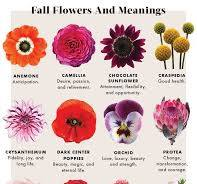

flower, the characteristic reproductive structure of angiosperms. As popularly used, the term “flower” especially applies when part or all of the reproductive structure is distinctive in color and form. Given that there over 352,000 species of flowering plants known to science, flowers have a seemingly endless array of colors, sizes, forms, and anatomical arrangement. They range in size from minute blossoms to the giant blooms of Rafflesia and the titan arum. In some plants, such as poppy, magnolia, tulip, and petunia, each flower is relatively large and showy and is produced singly, while in other plants, such as aster, snapdragon, and lilac, the individual flowers may be very small and are borne in a distinctive cluster known as an inflorescence. Regardless of their variety, all flowers have a uniform function, the reproduction of the species through the production of seed.